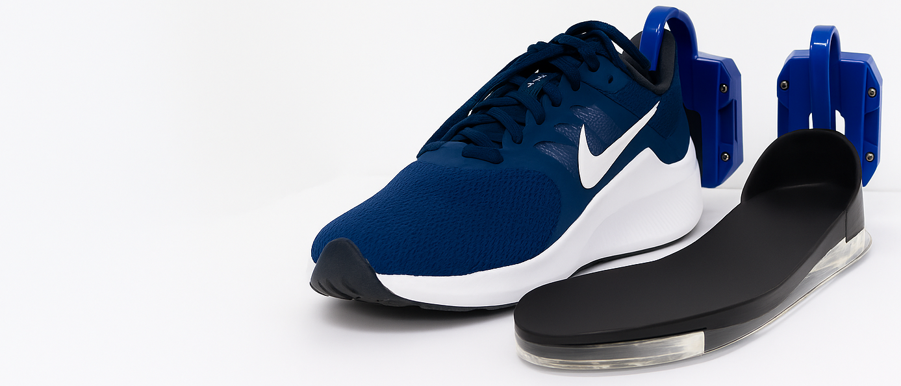
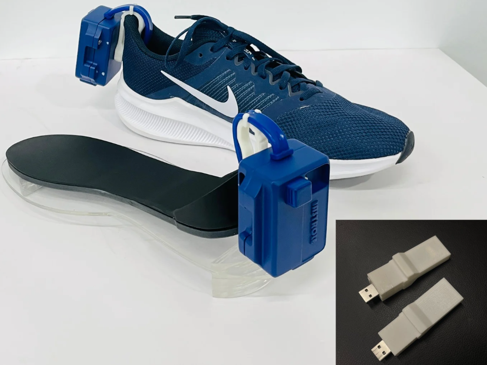
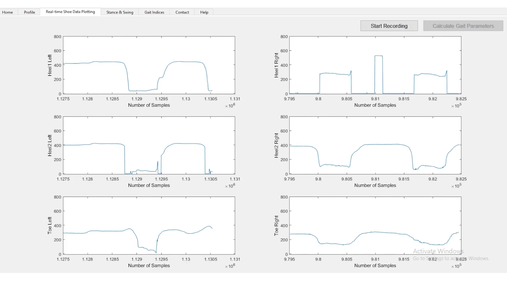
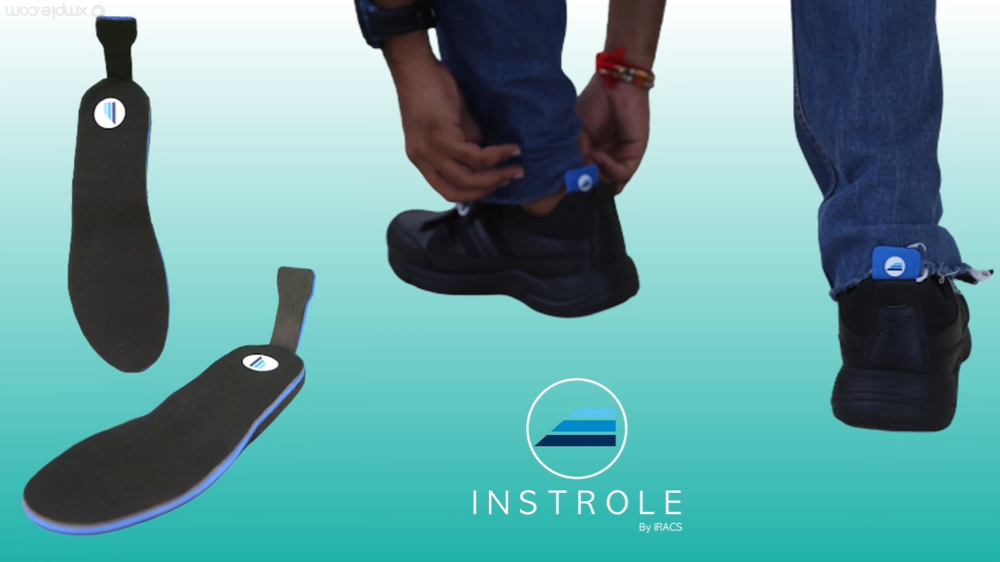
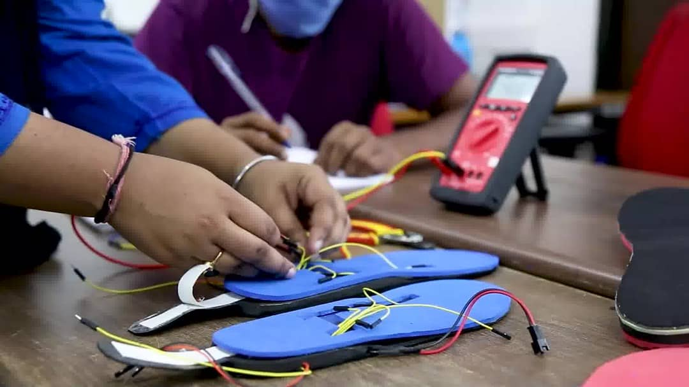
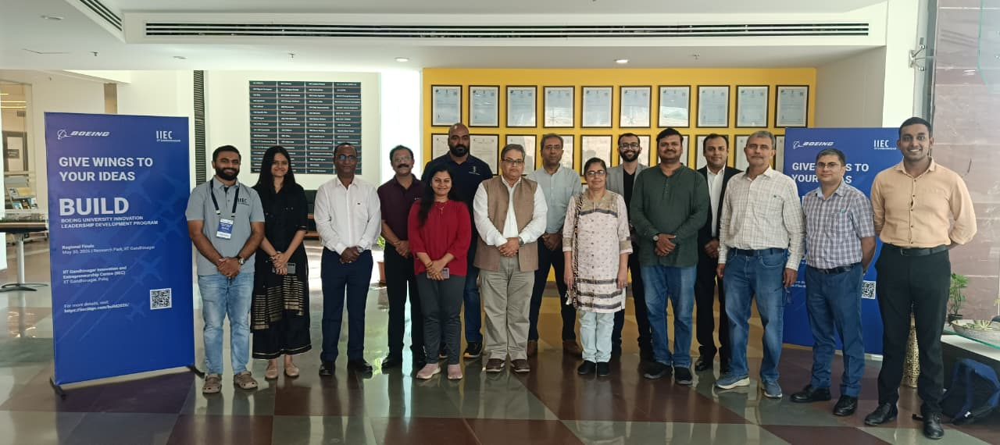

Student Award
Recognized for breakthrough gait analysis research and wearable system design.
From biomechanical insight to real-time action, our platform powers better support for flat foot drop, gait anomaly detection, Parkinson’s care, and elder fall prediction.





Instrole has earned awards for research-driven design, including student innovation recognition and an industry award from Singapore.
Recognized for breakthrough gait analysis research and wearable system design.
Honored for innovation in movement science, telehealth, and elder care safety.
Instrole is a wearable device that quantifies gait by sensing the pressure profile at cardinal points beneath the foot during walking. It reports gait indices such as Step Time, Stride Time, Cadence, %Stance, %Swing, and Double Limb Support Time, calibrated against state-of-the-art gait quantification tools. Instrole is cost-effective, user-friendly, can predict and detect falls, identify gait disorders, and integrates with mobile platforms for real-time monitoring and personalized recommendations.
From sensor capture to visual feedback, Instrole shows how gait anomalies are detected and corrected in seconds.
Visual support for improved foot clearance and stability.
Pressure and motion visualisation while wearing smart shoes.
Shashi-level precision for identifying asymmetry and inefficiency.
Monitoring and cues to support smoother movement.
Before and after insights for movement with and without system assistance.
Predictive modeling and wearable integration help reduce fall risk for seniors wearing smart shoes.
Immediate detection when a bend or misstep occurs, with rapid notification pathways for caregivers.

Founder — motion scientist and product strategist leading the Instrole platform. Focused on gait analytics, wearable integration, and clinical translation.
Co-founder — technical lead and academic collaborator specializing in sensor validation, biomechanics, and research-driven product development.
Room No. 302, IIT Gandhinagar Research Park, IIT Gandhinagar, Palaj, Gandhinagar, Gujarat 382355
Email: oreejoy@gmail.com
Get in touch to learn how Instrole can support your clinic, care center, or wearable product line.